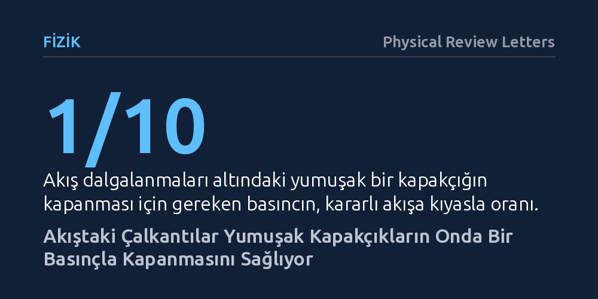

FIZIK · Physical Review Letters · 2026-10-08
Araştırmacılar, kalp kapakçıklarının dalgalı kan akışında nasıl tek yönlü çalıştığını anlamak için domuz kalbi ve konik modellerle deneyler yaptı. Akıştaki rastgele çalkantıların kapakçık bükülmesini tetikleyerek sabit akışa göre onda bir basınçta kapanmayı sağladığı gösterildi.
Kalp kapakçıklarının sanılanın aksine pürüzsüz bir akışla değil, akıştaki çalkantı ve gürültü sayesinde çok daha az enerji harcayarak kapandığını gösteriyor.

Biyolojik kapakçıkların temel görevi, sürekli yön değiştiren ve dalgalanan iç akışları denetleyerek sıvının yalnızca tek bir yönde akmasını sağlamaktır. Kalbimizin sol karıncığı ile sol kulakçığı arasında yer alan mitral kapak gibi yapılar, kanın geri kaçmasını engellemek için her atımda esnek biçimde şekil değiştirip kapanmak zorundadır. Ancak kalp içerisindeki kan akışı sakin ve tekdüze bir nehir gibi akmaz; aksine son derece çalkantılı, darbeli ve karmaşıktır.
Mühendislik tasarımlarında akışkan içindeki çalkantılar ve rastgele dalgalanmalar çoğunlukla enerji kaybına yol açan, engellenmesi gereken bir kusur olarak değerlendirilir. Buna karşın biyolojik sistemlerin bu mekanik gürültüyle nasıl başa çıktığı ve hatta bundan yararlanıp yararlanmadığı fiziksel açıdan uzun süredir tam olarak aydınlatılamamıştı. Asıl merak edilen soru, bu yumuşak kapakçıkların çalkantılı akışta yön kontrolünü hangi temel fizik kurallarına dayanarak sağladığıydı.
Fizikçiler bu mekanizmayı çözmek için biyolojik dokular ile basitleştirilmiş laboratuvar modellerini bir araya getiren bir deney kurguladı. Deneylerde hem vücut dışına çıkarılmış domuz kalbi dokuları incelendi hem de mitral kapağın işleyişini taklit eden yumuşak, konik kabuk biçiminde sentetik kapakçık modelleri kullanıldı. Üzerine gelen sıvı akışı altında bu esnek konilerin nasıl büküldüğü ve akışı nasıl yönlendirdiği yüksek hassasiyetle kaydedildi.
Araştırmacılar yalnızca gözlem yapmakla kalmayıp elde ettikleri bulguları matematiksel bir çerçeveye oturttu. Esnek katıların akışkanlarla etkileşimini açıklayan elastohidrodinamik bir kuram geliştirildi. Bu model, akışkanın uyguladığı rastgele hidrodinamik kuvvetlerin kapakçık üzerinde ani bir kararsızlık yaratarak sistemi kapanmaya zorladığını, yani dinamik bir çatallanma oluşturduğunu sayısal olarak ortaya koydu.
Deneylerin ve kuramsal modelin ortaya koyduğu en çarpıcı sonuç, akıştaki gürültü ve dalgalanmaların kapakçığın kapanmasını zorlaştırmak yerine tam tersine kolaylaştırması oldu. Kararlı ve sakin bir akışta esnek kapakçığı büküp tamamen kapatabilmek için yüksek bir sıvı basıncı gerekirken, akıştaki rastgele çalkantılar bu eşiği büyük ölçüde aşağı çekiyor.
Ölçümler, akış dalgalanmalarının yumuşak bir kapakçığı sabit akış için gereken basıncın yaklaşık onda biri düzeyinde bir basınçla kapatabildiğini gösterdi. Ayrıca kuramın öngördüğü üzere, kapakçığın bu bükülüp kapanma hareketinin dışarıdan yapılan müdahalelerle istendiğinde tetiklenebileceği de laboratuvar ortamında doğrulandı.
Bu çalışma, doğadaki yumuşak dokuların akışkan çalkantılarını bir sorun olarak görmek yerine, onları enerji tasarruflu bir avantaja dönüştürdüğünü gösteriyor. Kalp kapakçığı, kasların yüksek basınç üretmesine gerek kalmadan kanın kendi hareketindeki dalgalanmaları tetikleyici olarak kullanarak hızla ve güvenle kapanabiliyor.
Elde edilen bu fiziksel kavrayış, gelecekte üretilecek yapay kalp kapakçıkları, mikroakışkan çipler ve esnek robotik pompalar için verimli bir tasarım ilkesi sunuyor. Sert ve karmaşık mekanik valfler yerine, akışkanın doğal düzensizlikleriyle uyum içinde çalışan esnek zarlar tasarlamak, çok daha az enerjiyle çalışan dayanıklı biyomedikal ve endüstriyel cihazların önünü açabilir.